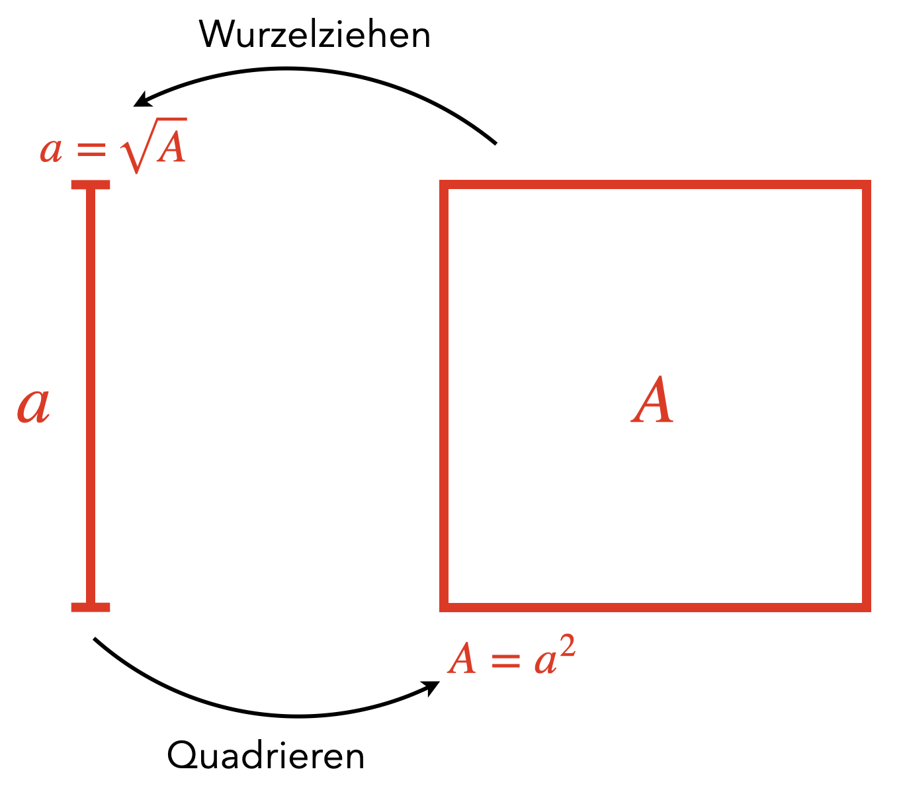

8 Zweites Intermezzo: Wurzel
Lernziele
- Sie vertiefen Ihr Verständnis über den Vier-Ebenen-Ansatz, insbesondere zu Begriffsbildungsprozessen auf der konkreten Ebene.
- Sie gewinnen einen Einblick in die Tätigkeitstheorie-basierte Gestaltung von Lernprozessen am Beispiel des Wurzelbegriffs.
Am Beispiel des Begriffs Wurzel sollen die in den letzten beiden Kapiteln dargestellten Inhalte auf der konkreten Ebene verdeutlicht werden. Um die Überlegungen zur Begriffsbildung anstellen zu können, wäre vorher eine Analyse auf der formalen und semantischen Ebene notwendig. Darauf wird hier der Übersichtlichkeit halber verzichtet – entsprechende Gedanken fließen implizit ein.
8.1 Wurzel-Begriffsverständnis
Als Begriffsinhalt des Wurzelbegriffs ist zunächst festzuhalten, dass die Wurzel bzw. das Wurzelziehen die Umkehrung des Quadrierens im Bereich der nichtnegativen Zahlen ist. Diese Nichtnegativität ist übrigens im Unterricht besonders herauszuarbeiten. Während \((-3)^2 = 9\) und \(3^2= 9\) ist, also die Gleichung \(x^2 = 9\) zwei Lösungen in den reellen Zahlen hat, ist \(\sqrt{9} = 3\) eindeutig festgelegt. Man kann also nicht pauschal von der Wurzel als die Umkehrung des Quadrates sprechen.11 Weiterhin zum Begriffsinhalt gehört die Eigenschaft, dass Wurzeln nicht immer rational sein müssen, auch wenn die Zahl, aus der die Wurzel gezogen wird, rational ist (z. B. bei \(\sqrt{2}\)). Der Wert einer Wurzel lässt sich jedoch mittels rationaler Zahlen annähern12. Das Vorgehen zum Finden einer Annäherung kann durchaus auch als Bestandteil des Begriffsinhalts aufgefasst werden.
Der Begriffsumfang der Wurzel sind demnach alle nichtnegativen reellen Zahlen, da für jede (rationale oder reelle) Zahl \(a\geq 0\) eine reelle Zahl \(x\geq 0\) gefunden werden kann, für die \(x^2 = a\) gilt. Dieser Begriffsumfang kann sich jedoch erst schrittweise entwickeln, da mit der Einführung des Wurzelbegriffs in der Regel noch nicht die reellen Zahlen bekannt sind. Die Menge aller Wurzeln rationaler Zahlen besteht zwar aus nichtnegativen reellen Zahlen – aber noch nicht aus allen (denn z. B. \(\sqrt{\pi}\) existiert ja auch). Ein vollständiger Begriffsumfang des Wurzelbegriffs ist also erst dann ausgeprägt, wenn die reellen Zahlen eingeführt wurden.
Damit werden auch schon Zusammenhänge des Begriffsnetzes sichtbar. Eng verbunden ist der Wurzelbegriff mit dem des Quadrates (sowohl algebraisch als auch geometrisch) und den Reellen Zahlen (als Lückenfüller der rationalen Achse). Auch das Wurzelziehen bzw. Radizieren13 als verwandte Arbeitsbegriffe gehören zum engen Begriffsnetz. Bei der Betrachtung der Gleichung \(x^2 = a\) sind auch Basis und Exponent sowie der Radikant, v. a. in der Schreibweise \(\sqrt{a} = x\), Bestandteile des Begriffsnetzes. Der Wurzelexponent wird dann v. a. bei höheren Exponenten von Bedeutung, wenn er in der Schreibweise \(\sqrt[n]{a}\) auftritt. Ob die Intervallschachtelung als Fachbegriff im Zusammenhang mit dem Wurzelziehen auftauchen muss, sollte abhängig von der Lerngruppe entschieden werden – bekommt damit aber eine besondere Bedeutung als Begriff eines Verfahrens.
Der Begriff der Wurzel kann als zentraler Begriff einer Unterrichtseinheit aufgefasst werden. Die verschiedenen Stufen des Begriffsverständnisses lassen sich nun auf den Wurzelbegriff anwenden: Das intuitive Begriffsverständnis ist gegeben, wenn die Schülerinnen und Schüler Wurzeln als Seitenlängen zu Quadraten mit vorgegebenen Flächeninhalten auffassen oder dies in einer algebraischen Sichtweise nachvollziehen. Zum inhaltlichen Begriffsverständnis gehört darauf aufbauend hinzu, dass es sich stets um nichtnegative Werte handeln muss. Ein integriertes Begriffsverständnis liegt vor, wenn die Monotonie und nicht-Linearität erkannt ist, also bspw. die näherungsweise Bestimmung einer Wurzel möglich ist. Auch der begriffliche Zusammenhang zu Quadrat, Basis und Exponent kann auf dieser Stufe von den Schülerinnen und Schülern hergestellt werden. Bestandteil der Stufe ist (später) ebenfalls die Verknüpfung zu höheren Potenzen und deren \(n\)-te Wurzeln. Das formale Begriffsverständnis geht einher mit der Kenntnis und Anwendbarkeit der Definition der Wurzel, hier insbesondere auch die Fähigkeit zu begründen, warum es keine negativen Wurzeln bzw. keine Wurzeln aus negativen Zahlen gibt. Ein strukturelles Begriffsverständnis ist bei einem zentralen Begriff (im Gegensatz zu Leitbegriffen) nicht zwingend notwendig.
8.2 Wurzel-Begriffseinführung
Hier vorgestellt werden soll eine Orientierung am Aufsteigen vom Abstrakten zum Konkreten, wobei einige Anregungen aus der Mathewerkstatt für die Klassenstufe 9 (Barzel et al., 2016, S. 92 ff.) entnommen sind.
Die Zone der nächsten Entwicklung ist natürlich eine individuelle Bezugsnorm der Schülerinnen und Schüler. Es kann aber prinzipiell davon ausgegangen werden, dass den Lernenden Quadrate bekannt sind und sie aus diesen Seitenlängen abmessen und den Flächeninhalt berechnen können. Noch nicht in der Lage sind sie, aus gegebenen Flächeninhalten die Seitenlänge eines Quadrates zu berechnen bzw. halbquantitive Zusammenhänge zu erzeugen (z. B. Wie ändert sich die Seitenlänge, wenn der Flächeninhalt halbiert wird?). Jedoch können sie diese Anforderungssituation mit ihrem bisherigen Wissen verstehen.
Der (innermathematische) Kontext ist also das Bestimmen einer Seitenlänge eines Quadrates bei gegebenem Flächeninhalt. Dies kann u. a. dadurch konkretisiert werden, dass zu einem Quadrat das mit dem halben Flächeninhalt gesucht wird. Dies erhöht die Konxtauthentizität dahingehend, das es sich um ein historisch relevantes Problem handelt (vgl. Barzel et al., 2016, S. 94). Dabei ist es reichthaltig genug, auch von der Halbierung abzusehen und allgemeinere Zusammenhänge zu erkunden. Ein erster Lösungsversuch ist zum Beispiel über das Falten eines quadratischen Blatt Papiers möglich (indem alle vier Ecken auf den Mittelpunkt gefaltet werden). Durch einen Vergleich des ursprünglichen und des gefalteten Quadrates kann man erkennen, dass die Seitenlänge nicht einfach halbiert werden kann.
Als Lernziel kann herausgearbeitet und formuliert werden: Wir wollen für ein Quadrat mit einem bestimmten Flächeninhalt die Seitenlänge bestimmen können. Dies ist allgemeiner formuliert als das Halbierungsproblem, aber eine solch allgemeine Formulierung ist durchaus sinnvoll, um das übergeordnete Ziel während des Lernprozesses stets vor Augen zu haben. Wichtig ist hierbei, dass auch das Ziel selbst von den Lernenden verstanden wird und sie jederzeit überprüfen können, inwieweit sie das Ziel schon erreicht haben.
Bei der Überlegung, welche Lernhandlungen geeignet sind, sich dem Wurzelbegriff zu nähern, sollen diese aus den fachlich relevanten Zusammenhängen extrahiert und am gewählten Kontext konkretisiert werden:
Ein wesentlicher Zusammenhang ist, dass sich Seitenlänge und Flächeninhalt eines Quadrates nicht proportional zueinander verhalten, also eine doppelte Seitenlänge nicht zu einem doppelten Flächeninhalt führt. Dieser nicht-Zusammenhang gilt aber dann natürlich auch umkehrt: Der doppelte Flächeninhalt wird nicht durch eine doppelte Seitenlänge verursacht. Diese Perspektive ist wichtig, um zu erkennen, dass sich Wurzeln unbekannter Zahlen nicht so einfach linear aus Wurzeln bekannter Zahlen konstruieren lassen. Als konkrete Lernhandlung lässt sich die umsetzen, indem zu vorgegebenen Quadraten Seitenlängen und Flächeninhalte bestimmt werden müssen. Die Auswahl sollte derart erfolgen, dass sowohl vielfache Seitenlängen als auch vielfache Flächeninhalte auftreten, damit bei den jeweils anderen Größen erkannt wird, dass diese keine entsprechenden Vielfachen darstellen.
Trotz der nicht-Linearität ist die bestehende (strenge) Monotonie ein weiterer Zusammenhang zwischen Seitenlängen und Flächeninhalt. Dieser kann herausgearbeitet werden, indem (nach der vorherigen Erfahrung) Flächeninhalte und Seitenlängen von Quadraten gegeben werden und zwischen diesen eine Zuordnung erfolgen muss. Dies betont den qualitativen Zusammenhang – auch wenn ein konkretes Ausrechnen damit noch nicht möglich ist.
Der nächste Handlungsschritt ist nun das näherungsweise Bestimmen von Seitenlängen über das Intervallschachtelungsprinzip. Dieses baut in fachlicher Hinsicht auf die Monotonie auf und es sind nun immer Zahlenpaare \(a_1\) und \(a_2\) gesucht, für die \(a_1^2 \leq A \leq a_2^2\) für einen gegebenen Flächeninhalt \(A\) gilt. Über eine vorstrukturierte (und ggf. auch schon über Beispiele vorausgefüllte) Tabelle kann dieses Vorgehen unterstützt werden. Begleitet werden kann dieses Vorgehen natürlich auch über ein zeichnerisches Nähern, indem den Quadraten weitere einbeschrieben werden, deren Seitenlängen gemessen und daraus der Flächeninhalt berechnet wird.
Tab. 8.1: Intervallschachtelung zur Bestimmung von \(\sqrt{8}\) \(a_1^2\) \(a_1 \leq \sqrt{8\,\mathrm{cm}^2} \leq a_2\) \(a_2^2\) \(4\,\mathrm{cm}^2\) \(2\,\mathrm{cm} \leq \sqrt{8\,\mathrm{cm}^2}\leq 3\,\mathrm{cm}\) \(9\,\mathrm{cm}^2\) \(7{,}84\,\mathrm{cm}^2\) \(2{,}8\,\mathrm{cm} \leq \sqrt{8\,\mathrm{cm}^2}\leq 3\,\mathrm{cm}\) \(9\,\mathrm{cm}^2\) \(7{,}84\,\mathrm{cm}^2\) \(2{,}8\,\mathrm{cm} \leq \sqrt{8\,\mathrm{cm}^2}\leq 2{,}9\,\mathrm{cm}\) \(8{,}41\,\mathrm{cm}^2\) \(7{,}84\,\mathrm{cm}^2\) \(2{,}8\,\mathrm{cm} \leq \sqrt{8\,\mathrm{cm}^2}\leq 2{,}85\,\mathrm{cm}\) \(8{,}1225\,\mathrm{cm}^2\) \(\vdots\) All die Handlungen haben gemeinsam, dass dabei zwar am Ausgangskonkretum (Quadrate mit bestimmten Flächeninhalten und Seitenlängen) agiert wird, allerdings sind sie verallgemeinerbar und in ihrer Ausführung nicht an die genutzen Größen- und Zahlenwerte gebunden. Die mit den Lernhandlungen verbunden Aufgabenstellungen sollten dabei über eine Kernfrage in ihrer Vorschauperspektive begleitet werden. Aus dem Lernziel heraus lässt sich beispielsweise formulieren (siehe Barzel et al., 2016, S. 94): »Warum ist es so schwierig, das Quadrieren rückwärts zu rechnen?«
Die etappenweise Verinnerlichung von Handlungen bietet sich insbesondere für die dritte Lernhandlung an (in der die Wurzeln näherungsweise bestimmt werden), da in dieser Handlung alle vorherigen Zusammenhänge integriert sind. Eine materielle bzw. materialisierte Handlung ist schwer zu identifizieren, ggf. noch das Ausmessen der Seitenlänge eines Quadrates. In der sprachlichen Handlung sollte das Vorgehen der Intervallschachtelung von den Schülerinnen und Schülern beschrieben werden. Die geistige Handlung ist dann das Ausführen der Intervallschachtelung selbst (wobei natürlich die errechneten Zahlen notiert werden).
Die bei der Diskussion der Lernhandlungen dargestellten wesentlichen Begriffseigenschaften müssen nun den Schülerinnen und Schülern über die Verallgemeinerung der Lernhandlungen explizit gemacht werden. Dies kann bspw. im Unterrichtsgespräch erfolgen, indem das Vorgehen am konkreten Beispiel reflektiert und dabei das Allgemeine daran herausgearbeit wird. Es müssen natürlich nicht Begriffe wie nicht-Linearität, Monotonie und Intervallschachtelung genutzt werden, aber deren inhaltliche Aussagekraft muss sichtbar werden. Daraus abgeleitet kann nun die Ausgangsabstraktion formuliert werden. Angelehnt an die Anforderungen an eine Definition, könnte dies sein:
Die Wurzel einer nichtnegativen Zahl \(A\) ist diejenige nichtnegative Zahl \(a\), für die \(a^2 = A\) gilt.
Man schreibt: \(a = \sqrt{A}\).
Beispiel: \(\sqrt{9} = 3\), denn \(3^2 = 9\).
Abb. 8.1: Veranschaulichung der Wurzel
Achtung! Es ist zwar \((-3)^2 = 9\), aber \(\sqrt{9} \neq -3\), da \(-3\) negativ ist. Außerdem ist \(\sqrt{-9}\) nicht definiert, da \(-9\) negativ ist.
In der Definition werden beschreibende Elemente mit der ikonischen und symbolischen Darstellungsebene in Bezug gebracht. Abbildung 8.1 kann gleichzeitig als Lernmodell aufgefasst werden: Sie veranschaulicht den Begriff und stellt gleichzeitig dar, wie zum Begriff gelangt werden kann. Damit liefert sie auch eine anschauliche Orientierung, wie das näherungsweise Bestimmen von Wurzeln über das Einbeschreiben von Quadraten erfolgen kann (siehe Abbildung 8.2).

Abb. 8.2: Nutzung des Lernmodells für die Intervallschachtelung
Auch die Auswahl des Beispiels \(\sqrt{9}=3\) war nicht zufällig. Als Einstiegsbeispiel sollte ein leicht nachvollziehbares gewählt werden, daher sollte es sich um (möglichst kleine) natürliche Zahlen handeln und nicht mit Einheiten agiert werden. \(\sqrt{0}\) und \(\sqrt{1}\) fallen weg, da dies Spezialfälle sind, in denen die Werte für Wurzel und Quadrat identisch sind. \(\sqrt{4}\) ist ebenfalls ungünstig, weil dann bei der Erklärung der Umkehrung \(2^2 = 4\) die Ziffer \(2\) doppelt (und in verschiedenen Funktionen) auftaucht, nämlich als Basis und als Exponent. Um derartige Anfangsverwirrungen zu vermeiden, ist dann \(\sqrt{9}\) das nächstliegende Einstiegsbeispiel. Entsprechend dem Kontrastprinzip müssen auch nahe Gegenbeispiele wie \(\sqrt{-9}\) sowie \(\sqrt{9}\neq -3\) gebracht werden. Das Variationsprinzip für die Auswahl von Beispielen kann über die verschiedenen Quadrate am Ausgangskonkretum erfüllt werden, in dem dort etwa nicht nur natürliche Zahlen auftreten.
Im letzten Schritt folgt das Abarbeiten von Konkretisierungsreihen, anhand derer das Ausgangsabstraktum tiefer durchdrungen wird.
Beim Wurzelbegriff geht dies insbesondere mit der Zahlbereichserweiterung in die reellen Zahlen einher. Dabei werden Wurzeln als Zahlen (und nicht Seitenlängen) aufgefasst und bspw. auch auf dem Zahlenstrahl geordnet.
Eine weitere charakteristische Anwendung der Lernhandlungen am Lernmodell ist bei der Betrachtung des Wurzelgesetzes \(\sqrt{x\cdot y} = \sqrt{x}\cdot \sqrt{y}\) möglich. Wird die Wurzel als Aufforderung verstanden, zu einem Flächeninhalt die Seitenlänge des zugehörigen Quadrates zu finden, kann man den Term \(\sqrt{9\cdot 5}\) auffassen als die Suche nach der Seitenlänge des Quadrates mit dem \(9\)-Fachen des Flächeninhalts von \(5\,\mathrm{cm}^2\). Geometrisch interpretiert und angelehnt ans Lernmodell kann dies als ein Quadrat von Quadraten dargestellt werden (siehe Abbildung 8.3). Dann ist die gesuchte Seitenlänge gerade das \(\sqrt{9}\)-Fache der Seitenlänge des Quadrates mit \(5\,\mathrm{cm}^2\) Flächeninhalt, also \(\sqrt{9\cdot 5} = \sqrt{9}\cdot \sqrt{5}\). Dies ist natürlich nur eine Plausibilitätsbetrachtung. Eine Begründung ist dann aber ebenfalls mithilfe der Definition über die Umkehrung und Nutzung der Potenzgesetze möglich: \(x^2\cdot y^2 = (x\cdot y)^2\).

Abb. 8.3: Nutzung des Lernmodells für Quadrate von Quadraten
Wie nun aber konkrete Aufgaben und Lernumgebungen gestaltet werden können, die bspw. die Lernprozesse vom Ausgangskonkretum zum Ausgangsabstraktum bzw. zum Abarbeiten der Konkretisierungsreihen unterstützen, soll im weiteren Verlauf der Veranstaltung geklärt werden.
8.3 Zum Nachbereiten
Relektieren Sie, inwieweit das Vorgehen beim Ersten Intermezzo zum Flächeninhalt über das Aufsteigen vom Abstrakten zum Konkreten realisiert werden kann und was dabei insbesondere das Ausgangskonkretum, die Lernhandlungen, das Lernmodell und die Ausgangsabstraktion sein können.
References
Dies wird bei höheren Exponenten sogar noch bedeutsamer: Dort ist \((-3)^3 = -27\). Die Gleichung \(x^3 = -27\) ist im Reellen sogar eindeutig lösbar (im Komplexen dagegen hat sie drei Lösungen), aber \(\sqrt[3]{-27}\) ist nicht definiert. Gerade, weil einige Taschenrechner fälschlicherweise die dritte Wurzel aus \(-27\) mit \(-3\) angeben, muss auf eine derartige Gefahr eingegangen werden, wenn Wurzeln höherer Exponenten behandelt werden. Dies zeigt einmal mehr, dass Sie als Lehrkraft über den aktuellen Unterrichtsstoff (z. B. Quadratwurzeln) hinausdenken müssen (z. B. Kubikwurzeln), um Rückschlüsse ziehen zu können, welche inhaltlichen Besonderheiten zu betonen sind.↩︎
Die fachmathematische Grundlage hierfür ist, dass Cauchy-Folgen in den reellen Zahlen immer konvergieren und sich die nichtnegative Lösung der Gleichung \(x^2 = a\) mit \(a\geq 0\) über eine rationale Cauchy-Folge nähern lässt – konkret mit dem Heron-Verfahren.↩︎
Hier lohnt es sich übrigens, auf die Wortherkunft einzugehen und zu begründen, warum Radieschen als solche bezeichnet werden.↩︎